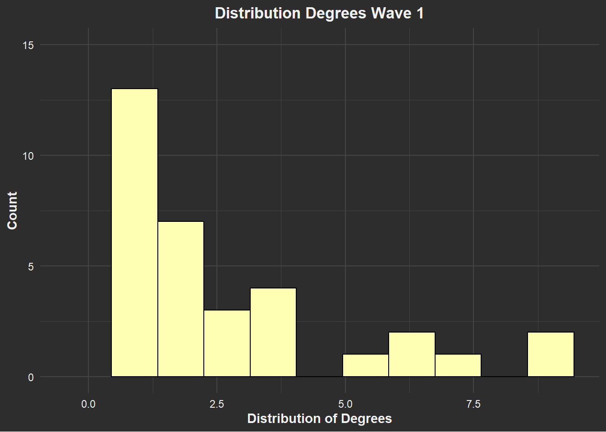
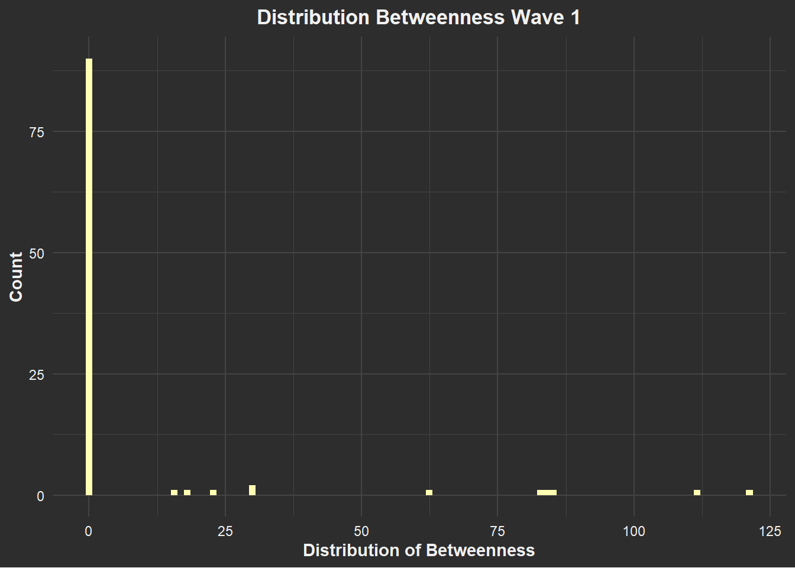
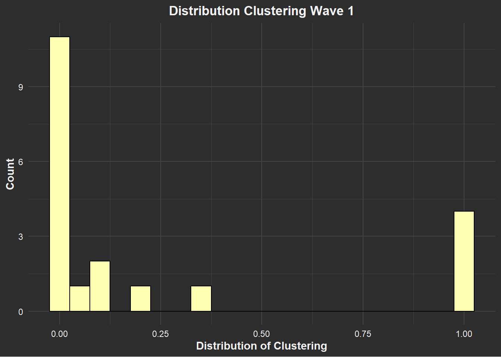

Results - Descriptives
Verooo
2024-11-23
1 Getting started
1.1 Packages
1.2 Functions
Functions chunk
More functions
1.3 Load data
Scholar data
Ego data
2 Descriptive Analysis
The network statistics, and descriptives, just as visualizations of the collaboration network can be found on this page. For Ego-level descriptives on gender and h-index, please consult the latter part of the Data & Analysis part of this final report.
2.1 Network Description
The network data we are looking at pertains to 101 scholars and their publications. In the time frame of the wave at hand, namely form 2015 to 2018, we find 47 edges, with 6 reciprocated collaborations 36 ties that are asymmetric. Additionally, there were 5009 occasions in which a ties could have been made but was not. The edge density of 0.004 suggests that from all possible edges, this sample contains relatively few.
In terms of triad-configurations, pertaining to the different possibilities three scholars could collaborate, we find that the most common one is no collaboration at all (configuration ‘003’). Beyond that, the configuration ‘012’ is also common, meaning that only one directed edge is present in the triad. In our sample it is also common for such edge to be reciprocated, as seen in the third-highes-t count of the triad-configuration ‘102’, a graph with a mutual connection between two vertices. Overall, the seems to be high number of isolates in the sample network.
Degree centrality, often simply called ‘degree’, measures the number of connections a scholar, or ego, has with other scholars, known as alters. Here, we distinguish between two types of degrees: incoming connections (indegrees) and outgoing connections (outdegrees). Indegrees represent ties directed toward the ego, which in this case signify instances where the ego is not the primary author of a paper. Conversely, outdegrees represent ties originating from the ego, indicating collaborations where the ego assumes the role of the first author. From the histograms below we can already observe patterns of clustering in terms of scholars’ publications, as only very few vertices have many infegrees, while most vertices have a low number of indegrees. Hence, there seems to be a skew in collaboration ties.
Making graph object
test_w1 <- igraph::graph_from_adjacency_matrix(
test$nets[1,,], # first wave of data.
# (thus I select the array of networks and take the first matrix)
mode = c("directed"),
weighted = NULL,
diag = FALSE,
add.colnames = NULL,
add.rownames = NULL)2.1.1 Nr. of nodes/vertices
#> [1] 1012.1.2 Nr. of edges
#> [1] 472.1.3 Dyad census
#> $mut
#> [1] 6
#>
#> $asym
#> [1] 35
#>
#> $null
#> [1] 50092.1.4 Triad-census
#> [1] 162709 3266 561 19 38 25 17 10 1 0 1 0 1
#> [14] 1 1 02.1.5 Edge-density
#> [1] 0.0046534652.1.6 Degree centrality
(with isolates)

2.1.7 Betweenness Centrality
(with isolates)

2.1.8 Clustering
(with isolates)

2.2 Network Visualization (WITHOUT isolates)
The isolates of the network have been removed to allow for a better readability of the graphs. Only vertices with edges remain part of the visualizations. In other words, only scholars with collaborations are seen in the following graphs. It should be noted that this may make the graphs look different and potentially makes the networks seems more well connected than they actually are. Nonetheless, some things stand out upon first glance. Consult the texts below for a more detailed description.
Removing isolates
indegr_w1 <- igraph::degree(test_w1, mode = "in")
isolates_w1 <- V(test_w1)[degree(test_w1, mode = "all") == 0]
noisolates_w1 <- delete_vertices(test_w1, isolates_w1)Remaining edges and vertices:
#> [1] 47#> [1] 332.2.1 Gender

In this network visualization yellow nodes represent women, while blue nodes represent men. We find some clusters of blue nodes, which suggests that clustering based on scholars’ gender might be present in their collaboration preferences. However, these patterns do not stand out as drastically as they could upon first glance.
2.2.2 Gender & Department (indegree)

In the graph above, the size of a node represents their indegree, the color represents their belonging to a department (red = political science, blue = sociology), and the shape represents the gender (circle = woman, triangle = man). Focusing on department, represented by the colors, we can see a clear difference between the indegrees of the two departments. However, there seems to be very few scholars of the political science department in the non-isolate network to begin with. This may explain some of the later findings.
2.2.3 Gender & H-index (indegree)

In this graph, the colour gradient from blue to red indicates the prestige of a scholar, with blue marking the highest h-index and red marking the lowest. The size represents the indegrees that node has, which refers to the number of collaboration that other scholars initiated with this scholar within the time span of 2015-2018. The shape represents scholars’ gender with triangles representing men and circles representing women. With regard to H-index, we observe that the nodes with colors that are more blue are simultaneously also the biggest ones, indicating that scholars with high H-Indeces also have more indegrees and that clustering may be present based on scholars’ prestige. In terms of gender difference, we see that those aformentioned nodes are also mostly triangular in shape, which signals that the men in this non-isolate sample seem to have an overall higher h-index and high number of indegress. This implies that clustering in collaborations is present and seems to relate to both scholars’ prestige and gender.